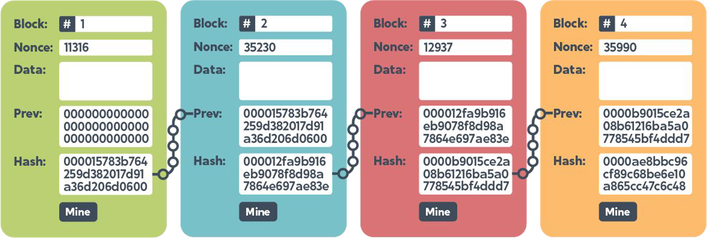

Nonce and the Hash
Why we do it this way.
Hash: a quick review
If needed, I would encourage you to review my earlier post on hashing. Long story -> short, a hash is a short & unique representation of data. Using SHA256 and the hashlib.sha256() function, any data can be represented with a unique 32-byte hash value.

In Blockchain, each block will contain the hash of the previous block and the hash signature for it’s own data. The hash is the “chain” that links one block to another.
Nonce
Depending on where you look, you may see the term “nonce” defined as “number used only once” or more simply “number once”. In Bitcoin mining, and other Blockchains using a proof-of-work (PoW) consensus algorithm, the nonce is the number that solves the complicated statistical puzzle.
The puzzle may require finding the appropriate nonce that, when hashed with the other data to be included with the block, results in a hash with a dozen, or more, leading zeros. Because of the nature of the selected hash function, there are no shortcuts and the mining computers will use a trial-and-error process to find the proper nonce.
Finding the right combination of nonce and block data consumes significant computational power.
Time
Every Blockchain has a target mining frequency. In PoW, timing is maintained by adjusting the complexity of the puzzle / increasing the number of leading zeros required of a new block’s hash. For example, finding the nonce and creating a new block on Bitcoin takes around 10 minutes. When Ethereum was using PoW, a new block was mined approximately every 15 seconds.
Immutability
Data in the Blockchain is immutable. It can’t be changed. The data included in the hash process of a block includes the hash of the previous block. Any change in the block content changes the whole hash! If the content of a previous block changes, the chain is broken.
Conclusion
Hashes facilitate the code principle of Blockchain technology. In a PoW consesnsus environment, find the nonce is core to producing an appropriate hash that meets the required complexity.